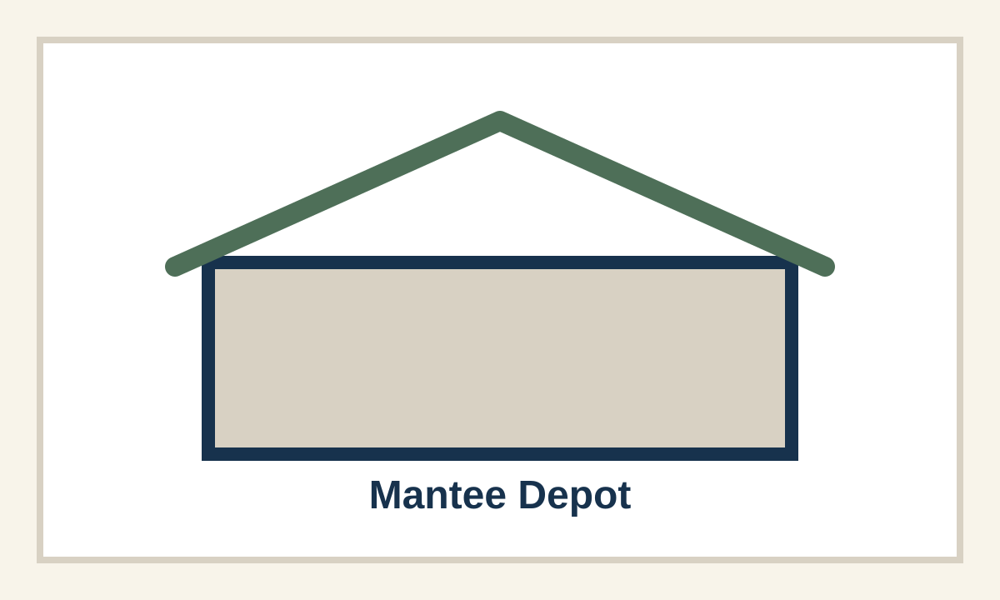
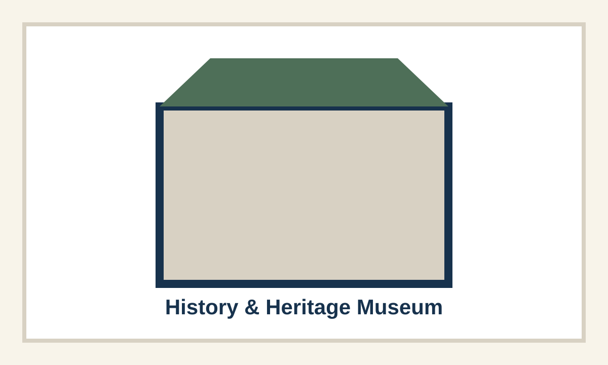
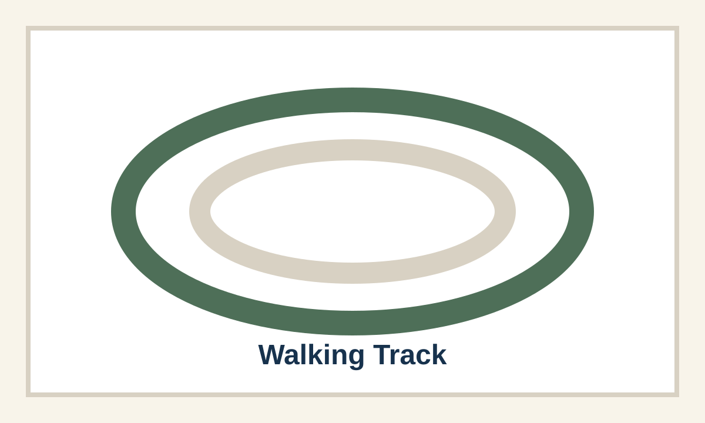
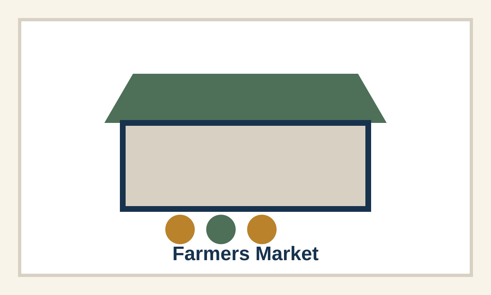

Public Notices
Posted notices, public hearing notices, and approved notice documents will appear here.
View noticesOfficial Town Information
A simple official source for public notices, meetings, resident services, community information, and Town records.
Draft local photo: NEEDS_CONFIRMATION
Starter records are placeholders. Final notices, agendas, minutes, and ordinances must be confirmed before publication.
Official notice text or approved PDF will appear here.
View public noticesMeeting records will include agendas and minutes once approved.
View meetingsRecords & Documents
A focused place for the public documents residents are most likely to look for. All final records must be reviewed and approved before publication.
Posted notices, public hearing notices, and approved notice documents will appear here.
View noticesAgendas, minutes, meeting dates, and approved board records will be organized here.
View meetingsAdopted ordinance records and related public documents will be added after confirmation.
View ordinancesConfirmed permit process, forms, requirements, and submission details will appear here.
View permitsResident Services
Fast paths to practical information residents are likely to need.
Start Here
Confirmed forms, processes, facility information, and contact details will be added as they are approved.
Contact the TownCommunity Identity
These homepage placeholders give visible space to Mantee community assets while keeping all details pending Town confirmation.

Approved description, access details, and photo permissions will be added after review.
View placeholder
Hours, contact details, exhibits, and governance information require confirmation.
View placeholder
Location, hours, rules, accessibility, and maintenance contact require confirmation.
View placeholder
Schedule, location, vendor process, fees, and contact information require confirmation.
View placeholderThe website should hold confirmed public information while still showing the places and activities that help residents recognize Mantee as home.
Draft local photo: NEEDS_CONFIRMATION
View community page